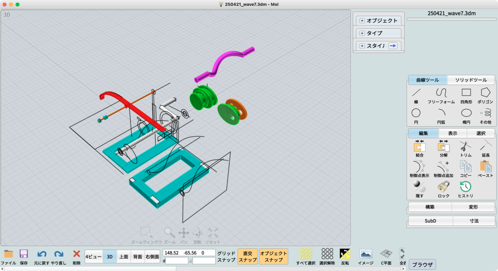

投稿日: 2025/06/04 03:41:55
カテゴリ: 立体造形
サムネイル: 
以前書いていたKinetic Wave V1の続報を書いていなかったので、忘れないうちに記録。
実はあれからすぐ改良して、部品点数が多くて故障が多かったので、シンプルな形状に作り直した。
一番困ったのはカムの部分で、いろんな形状を試行錯誤した結果、最終的に楕円カムの角度を少しずつズラすことで、自分の思う滑らかな波を実現させた。
ちなみに3Dプリント (PLA) では、上に乗っかっているシーソーの重量が軽すぎて思ったほどカムにうまく乗ってくれなかったので、よく見ると重りとして太めの針金をホットボンドで端に取り付けてある。
せっかくなので、一部無関係な写真も含まれているけれど、出力過程やCADのスクリーンショットなどを記録。（ちなみに使っているCADソフトはMoiというもの。）
この一連の創作で感じたことは、やはり映像でいくら似たようなものを見ていても、実際に自分で作ってみなければ、実際の物理的な制約の難しさはわからないし、3Dプリントや木工（今回木工や針金などでも試行錯誤したのだけれど）なども含めた、材質的な制約や工作上の制約もわかりにくい。
やはり、何でも一度は自分でやってみなければ、本当に理解したことにはならないというのを今回痛感した。
これを作ったあと、実は次回作を予定していて着手できていないのだけれど、例えば人間の手とピアノをモチーフにした、もっと有機的な造形へと進化することを計画中。どんなものになるか、いつできるかは未定だけれど、乞うご期待。